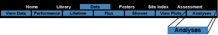
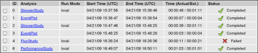

Select Analyses under the Data menu to see your analysis list.

Analyses are studies you have run in the past 48 hours. You can click on the link in the Analysis column to see the plot you made and save it permanently if you are satisfied with it.

You can always run the analysis again and change the input parameters. Items remain for a maximum of 48 hours with a limit of 80 items per research group. The oldest items get removed first.